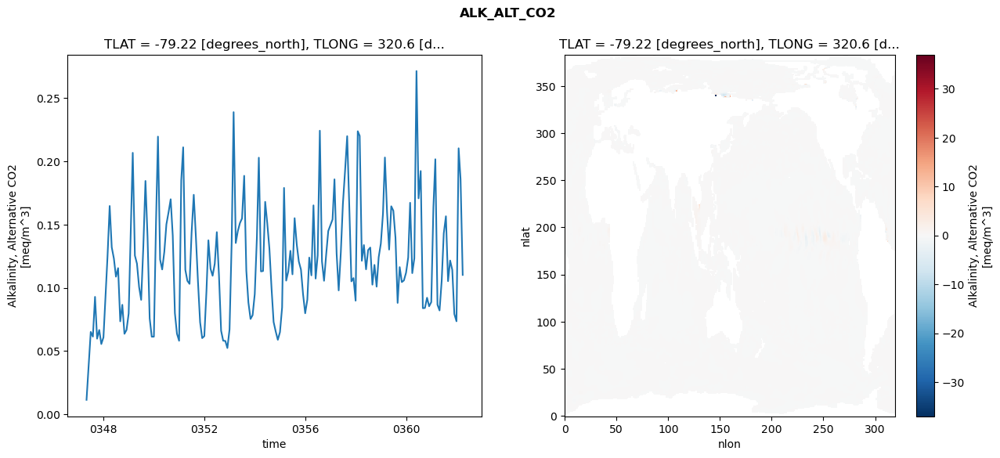
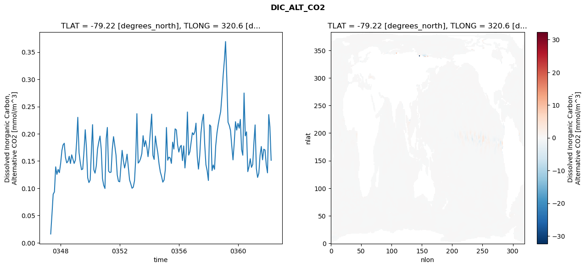
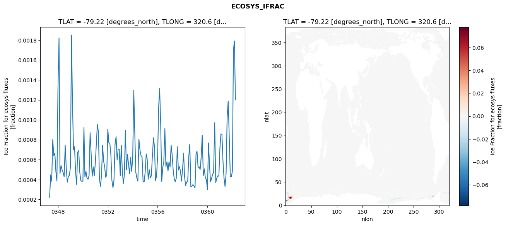
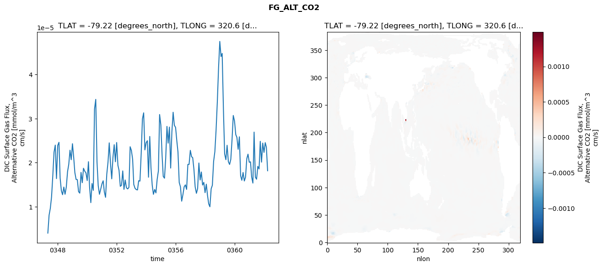

glb-dor_North_Atlantic_basin_010_1999-04-01_00041#
Simulation details#
Case: smyle.cdr-atlas-v0.glb-dor_North_Atlantic_basin_010_1999-04-01_00041.001
Basin: North_Atlantic_basin
Polygon: 10.0
Start date: 1999-04
Show code cell source Hide code cell source
import xarray as xr
import matplotlib.pyplot as plt
Show code cell source Hide code cell source
zarr_store = "/path/to/zarr/store"
# Parameters
zarr_store = "/global/cfs/projectdirs/m4746/Projects/Ocean-CDR-Atlas-v0/data/validation/smyle.cdr-atlas-v0.glb-dor_North_Atlantic_basin_010_1999-04-01_00041.001.validation.zarr"
Show code cell source Hide code cell source
%%time
ds_o = xr.open_zarr(zarr_store).compute()
ds_o
CPU times: user 655 ms, sys: 508 ms, total: 1.16 s
Wall time: 1.36 s
<xarray.Dataset> Size: 2MB
Dimensions: (nlat: 384, nlon: 320, time: 180)
Coordinates:
TLAT float64 8B -79.22
TLONG float64 8B 320.6
ULAT float64 8B -78.95
ULONG float64 8B 321.1
* time (time) object 1kB 0347-05-01 00:00:00 ... 0362-04-01 0...
z_t float32 4B 500.0
Dimensions without coordinates: nlat, nlon
Data variables:
ALK_ALT_CO2_diff (nlat, nlon) float32 492kB nan nan nan ... nan nan nan
ALK_ALT_CO2_rmse (time) float64 1kB 0.01132 0.03866 ... 0.1859 0.1102
DIC_ALT_CO2_diff (nlat, nlon) float32 492kB nan nan nan ... nan nan nan
DIC_ALT_CO2_rmse (time) float64 1kB 0.01608 0.05195 ... 0.2127 0.1514
ECOSYS_IFRAC_diff (nlat, nlon) float32 492kB nan nan nan ... nan nan nan
ECOSYS_IFRAC_rmse (time) float64 1kB 0.0002215 0.0004469 ... 0.001201
FG_ALT_CO2_diff (nlat, nlon) float32 492kB nan nan nan ... nan nan nan
FG_ALT_CO2_rmse (time) float64 1kB 4.046e-06 8.12e-06 ... 1.817e-05xarray.Dataset
- nlat: 384
- nlon: 320
- time: 180
- TLAT()float64-79.22
- long_name :
- array of t-grid latitudes
- units :
- degrees_north
array(-79.22052261)
- TLONG()float64320.6
- long_name :
- array of t-grid longitudes
- units :
- degrees_east
array(320.56250892)
- ULAT()float64-78.95
- long_name :
- array of u-grid latitudes
- units :
- degrees_north
array(-78.95289509)
- ULONG()float64321.1
- long_name :
- array of u-grid longitudes
- units :
- degrees_east
array(321.12500894)
- time(time)object0347-05-01 00:00:00 ... 0362-04-...
- bounds :
- time_bound
- long_name :
- time
array([cftime.DatetimeNoLeap(347, 5, 1, 0, 0, 0, 0, has_year_zero=True), cftime.DatetimeNoLeap(347, 6, 1, 0, 0, 0, 0, has_year_zero=True), cftime.DatetimeNoLeap(347, 7, 1, 0, 0, 0, 0, has_year_zero=True), cftime.DatetimeNoLeap(347, 8, 1, 0, 0, 0, 0, has_year_zero=True), cftime.DatetimeNoLeap(347, 9, 1, 0, 0, 0, 0, has_year_zero=True), cftime.DatetimeNoLeap(347, 10, 1, 0, 0, 0, 0, has_year_zero=True), cftime.DatetimeNoLeap(347, 11, 1, 0, 0, 0, 0, has_year_zero=True), cftime.DatetimeNoLeap(347, 12, 1, 0, 0, 0, 0, has_year_zero=True), cftime.DatetimeNoLeap(348, 1, 1, 0, 0, 0, 0, has_year_zero=True), cftime.DatetimeNoLeap(348, 2, 1, 0, 0, 0, 0, has_year_zero=True), cftime.DatetimeNoLeap(348, 3, 1, 0, 0, 0, 0, has_year_zero=True), cftime.DatetimeNoLeap(348, 4, 1, 0, 0, 0, 0, has_year_zero=True), cftime.DatetimeNoLeap(348, 5, 1, 0, 0, 0, 0, has_year_zero=True), cftime.DatetimeNoLeap(348, 6, 1, 0, 0, 0, 0, has_year_zero=True), cftime.DatetimeNoLeap(348, 7, 1, 0, 0, 0, 0, has_year_zero=True), cftime.DatetimeNoLeap(348, 8, 1, 0, 0, 0, 0, has_year_zero=True), cftime.DatetimeNoLeap(348, 9, 1, 0, 0, 0, 0, has_year_zero=True), cftime.DatetimeNoLeap(348, 10, 1, 0, 0, 0, 0, has_year_zero=True), cftime.DatetimeNoLeap(348, 11, 1, 0, 0, 0, 0, has_year_zero=True), cftime.DatetimeNoLeap(348, 12, 1, 0, 0, 0, 0, has_year_zero=True), cftime.DatetimeNoLeap(349, 1, 1, 0, 0, 0, 0, has_year_zero=True), cftime.DatetimeNoLeap(349, 2, 1, 0, 0, 0, 0, has_year_zero=True), cftime.DatetimeNoLeap(349, 3, 1, 0, 0, 0, 0, has_year_zero=True), cftime.DatetimeNoLeap(349, 4, 1, 0, 0, 0, 0, has_year_zero=True), cftime.DatetimeNoLeap(349, 5, 1, 0, 0, 0, 0, has_year_zero=True), cftime.DatetimeNoLeap(349, 6, 1, 0, 0, 0, 0, has_year_zero=True), cftime.DatetimeNoLeap(349, 7, 1, 0, 0, 0, 0, has_year_zero=True), cftime.DatetimeNoLeap(349, 8, 1, 0, 0, 0, 0, has_year_zero=True), cftime.DatetimeNoLeap(349, 9, 1, 0, 0, 0, 0, has_year_zero=True), cftime.DatetimeNoLeap(349, 10, 1, 0, 0, 0, 0, has_year_zero=True), cftime.DatetimeNoLeap(349, 11, 1, 0, 0, 0, 0, has_year_zero=True), cftime.DatetimeNoLeap(349, 12, 1, 0, 0, 0, 0, has_year_zero=True), cftime.DatetimeNoLeap(350, 1, 1, 0, 0, 0, 0, has_year_zero=True), cftime.DatetimeNoLeap(350, 2, 1, 0, 0, 0, 0, has_year_zero=True), cftime.DatetimeNoLeap(350, 3, 1, 0, 0, 0, 0, has_year_zero=True), cftime.DatetimeNoLeap(350, 4, 1, 0, 0, 0, 0, has_year_zero=True), cftime.DatetimeNoLeap(350, 5, 1, 0, 0, 0, 0, has_year_zero=True), cftime.DatetimeNoLeap(350, 6, 1, 0, 0, 0, 0, has_year_zero=True), cftime.DatetimeNoLeap(350, 7, 1, 0, 0, 0, 0, has_year_zero=True), cftime.DatetimeNoLeap(350, 8, 1, 0, 0, 0, 0, has_year_zero=True), cftime.DatetimeNoLeap(350, 9, 1, 0, 0, 0, 0, has_year_zero=True), cftime.DatetimeNoLeap(350, 10, 1, 0, 0, 0, 0, has_year_zero=True), cftime.DatetimeNoLeap(350, 11, 1, 0, 0, 0, 0, has_year_zero=True), cftime.DatetimeNoLeap(350, 12, 1, 0, 0, 0, 0, has_year_zero=True), cftime.DatetimeNoLeap(351, 1, 1, 0, 0, 0, 0, has_year_zero=True), cftime.DatetimeNoLeap(351, 2, 1, 0, 0, 0, 0, has_year_zero=True), cftime.DatetimeNoLeap(351, 3, 1, 0, 0, 0, 0, has_year_zero=True), cftime.DatetimeNoLeap(351, 4, 1, 0, 0, 0, 0, has_year_zero=True), cftime.DatetimeNoLeap(351, 5, 1, 0, 0, 0, 0, has_year_zero=True), cftime.DatetimeNoLeap(351, 6, 1, 0, 0, 0, 0, has_year_zero=True), cftime.DatetimeNoLeap(351, 7, 1, 0, 0, 0, 0, has_year_zero=True), cftime.DatetimeNoLeap(351, 8, 1, 0, 0, 0, 0, has_year_zero=True), cftime.DatetimeNoLeap(351, 9, 1, 0, 0, 0, 0, has_year_zero=True), cftime.DatetimeNoLeap(351, 10, 1, 0, 0, 0, 0, has_year_zero=True), cftime.DatetimeNoLeap(351, 11, 1, 0, 0, 0, 0, has_year_zero=True), cftime.DatetimeNoLeap(351, 12, 1, 0, 0, 0, 0, has_year_zero=True), cftime.DatetimeNoLeap(352, 1, 1, 0, 0, 0, 0, has_year_zero=True), cftime.DatetimeNoLeap(352, 2, 1, 0, 0, 0, 0, has_year_zero=True), cftime.DatetimeNoLeap(352, 3, 1, 0, 0, 0, 0, has_year_zero=True), cftime.DatetimeNoLeap(352, 4, 1, 0, 0, 0, 0, has_year_zero=True), cftime.DatetimeNoLeap(352, 5, 1, 0, 0, 0, 0, has_year_zero=True), cftime.DatetimeNoLeap(352, 6, 1, 0, 0, 0, 0, has_year_zero=True), cftime.DatetimeNoLeap(352, 7, 1, 0, 0, 0, 0, has_year_zero=True), cftime.DatetimeNoLeap(352, 8, 1, 0, 0, 0, 0, has_year_zero=True), cftime.DatetimeNoLeap(352, 9, 1, 0, 0, 0, 0, has_year_zero=True), cftime.DatetimeNoLeap(352, 10, 1, 0, 0, 0, 0, has_year_zero=True), cftime.DatetimeNoLeap(352, 11, 1, 0, 0, 0, 0, has_year_zero=True), cftime.DatetimeNoLeap(352, 12, 1, 0, 0, 0, 0, has_year_zero=True), cftime.DatetimeNoLeap(353, 1, 1, 0, 0, 0, 0, has_year_zero=True), cftime.DatetimeNoLeap(353, 2, 1, 0, 0, 0, 0, has_year_zero=True), cftime.DatetimeNoLeap(353, 3, 1, 0, 0, 0, 0, has_year_zero=True), cftime.DatetimeNoLeap(353, 4, 1, 0, 0, 0, 0, has_year_zero=True), cftime.DatetimeNoLeap(353, 5, 1, 0, 0, 0, 0, has_year_zero=True), cftime.DatetimeNoLeap(353, 6, 1, 0, 0, 0, 0, has_year_zero=True), cftime.DatetimeNoLeap(353, 7, 1, 0, 0, 0, 0, has_year_zero=True), cftime.DatetimeNoLeap(353, 8, 1, 0, 0, 0, 0, has_year_zero=True), cftime.DatetimeNoLeap(353, 9, 1, 0, 0, 0, 0, has_year_zero=True), cftime.DatetimeNoLeap(353, 10, 1, 0, 0, 0, 0, has_year_zero=True), cftime.DatetimeNoLeap(353, 11, 1, 0, 0, 0, 0, has_year_zero=True), cftime.DatetimeNoLeap(353, 12, 1, 0, 0, 0, 0, has_year_zero=True), cftime.DatetimeNoLeap(354, 1, 1, 0, 0, 0, 0, has_year_zero=True), cftime.DatetimeNoLeap(354, 2, 1, 0, 0, 0, 0, has_year_zero=True), cftime.DatetimeNoLeap(354, 3, 1, 0, 0, 0, 0, has_year_zero=True), cftime.DatetimeNoLeap(354, 4, 1, 0, 0, 0, 0, has_year_zero=True), cftime.DatetimeNoLeap(354, 5, 1, 0, 0, 0, 0, has_year_zero=True), cftime.DatetimeNoLeap(354, 6, 1, 0, 0, 0, 0, has_year_zero=True), cftime.DatetimeNoLeap(354, 7, 1, 0, 0, 0, 0, has_year_zero=True), cftime.DatetimeNoLeap(354, 8, 1, 0, 0, 0, 0, has_year_zero=True), cftime.DatetimeNoLeap(354, 9, 1, 0, 0, 0, 0, has_year_zero=True), cftime.DatetimeNoLeap(354, 10, 1, 0, 0, 0, 0, has_year_zero=True), cftime.DatetimeNoLeap(354, 11, 1, 0, 0, 0, 0, has_year_zero=True), cftime.DatetimeNoLeap(354, 12, 1, 0, 0, 0, 0, has_year_zero=True), cftime.DatetimeNoLeap(355, 1, 1, 0, 0, 0, 0, has_year_zero=True), cftime.DatetimeNoLeap(355, 2, 1, 0, 0, 0, 0, has_year_zero=True), cftime.DatetimeNoLeap(355, 3, 1, 0, 0, 0, 0, has_year_zero=True), cftime.DatetimeNoLeap(355, 4, 1, 0, 0, 0, 0, has_year_zero=True), cftime.DatetimeNoLeap(355, 5, 1, 0, 0, 0, 0, has_year_zero=True), cftime.DatetimeNoLeap(355, 6, 1, 0, 0, 0, 0, has_year_zero=True), cftime.DatetimeNoLeap(355, 7, 1, 0, 0, 0, 0, has_year_zero=True), cftime.DatetimeNoLeap(355, 8, 1, 0, 0, 0, 0, has_year_zero=True), cftime.DatetimeNoLeap(355, 9, 1, 0, 0, 0, 0, has_year_zero=True), cftime.DatetimeNoLeap(355, 10, 1, 0, 0, 0, 0, has_year_zero=True), cftime.DatetimeNoLeap(355, 11, 1, 0, 0, 0, 0, has_year_zero=True), cftime.DatetimeNoLeap(355, 12, 1, 0, 0, 0, 0, has_year_zero=True), cftime.DatetimeNoLeap(356, 1, 1, 0, 0, 0, 0, has_year_zero=True), cftime.DatetimeNoLeap(356, 2, 1, 0, 0, 0, 0, has_year_zero=True), cftime.DatetimeNoLeap(356, 3, 1, 0, 0, 0, 0, has_year_zero=True), cftime.DatetimeNoLeap(356, 4, 1, 0, 0, 0, 0, has_year_zero=True), cftime.DatetimeNoLeap(356, 5, 1, 0, 0, 0, 0, has_year_zero=True), cftime.DatetimeNoLeap(356, 6, 1, 0, 0, 0, 0, has_year_zero=True), cftime.DatetimeNoLeap(356, 7, 1, 0, 0, 0, 0, has_year_zero=True), cftime.DatetimeNoLeap(356, 8, 1, 0, 0, 0, 0, has_year_zero=True), cftime.DatetimeNoLeap(356, 9, 1, 0, 0, 0, 0, has_year_zero=True), cftime.DatetimeNoLeap(356, 10, 1, 0, 0, 0, 0, has_year_zero=True), cftime.DatetimeNoLeap(356, 11, 1, 0, 0, 0, 0, has_year_zero=True), cftime.DatetimeNoLeap(356, 12, 1, 0, 0, 0, 0, has_year_zero=True), cftime.DatetimeNoLeap(357, 1, 1, 0, 0, 0, 0, has_year_zero=True), cftime.DatetimeNoLeap(357, 2, 1, 0, 0, 0, 0, has_year_zero=True), cftime.DatetimeNoLeap(357, 3, 1, 0, 0, 0, 0, has_year_zero=True), cftime.DatetimeNoLeap(357, 4, 1, 0, 0, 0, 0, has_year_zero=True), cftime.DatetimeNoLeap(357, 5, 1, 0, 0, 0, 0, has_year_zero=True), cftime.DatetimeNoLeap(357, 6, 1, 0, 0, 0, 0, has_year_zero=True), cftime.DatetimeNoLeap(357, 7, 1, 0, 0, 0, 0, has_year_zero=True), cftime.DatetimeNoLeap(357, 8, 1, 0, 0, 0, 0, has_year_zero=True), cftime.DatetimeNoLeap(357, 9, 1, 0, 0, 0, 0, has_year_zero=True), cftime.DatetimeNoLeap(357, 10, 1, 0, 0, 0, 0, has_year_zero=True), cftime.DatetimeNoLeap(357, 11, 1, 0, 0, 0, 0, has_year_zero=True), cftime.DatetimeNoLeap(357, 12, 1, 0, 0, 0, 0, has_year_zero=True), cftime.DatetimeNoLeap(358, 1, 1, 0, 0, 0, 0, has_year_zero=True), cftime.DatetimeNoLeap(358, 2, 1, 0, 0, 0, 0, has_year_zero=True), cftime.DatetimeNoLeap(358, 3, 1, 0, 0, 0, 0, has_year_zero=True), cftime.DatetimeNoLeap(358, 4, 1, 0, 0, 0, 0, has_year_zero=True), cftime.DatetimeNoLeap(358, 5, 1, 0, 0, 0, 0, has_year_zero=True), cftime.DatetimeNoLeap(358, 6, 1, 0, 0, 0, 0, has_year_zero=True), cftime.DatetimeNoLeap(358, 7, 1, 0, 0, 0, 0, has_year_zero=True), cftime.DatetimeNoLeap(358, 8, 1, 0, 0, 0, 0, has_year_zero=True), cftime.DatetimeNoLeap(358, 9, 1, 0, 0, 0, 0, has_year_zero=True), cftime.DatetimeNoLeap(358, 10, 1, 0, 0, 0, 0, has_year_zero=True), cftime.DatetimeNoLeap(358, 11, 1, 0, 0, 0, 0, has_year_zero=True), cftime.DatetimeNoLeap(358, 12, 1, 0, 0, 0, 0, has_year_zero=True), cftime.DatetimeNoLeap(359, 1, 1, 0, 0, 0, 0, has_year_zero=True), cftime.DatetimeNoLeap(359, 2, 1, 0, 0, 0, 0, has_year_zero=True), cftime.DatetimeNoLeap(359, 3, 1, 0, 0, 0, 0, has_year_zero=True), cftime.DatetimeNoLeap(359, 4, 1, 0, 0, 0, 0, has_year_zero=True), cftime.DatetimeNoLeap(359, 5, 1, 0, 0, 0, 0, has_year_zero=True), cftime.DatetimeNoLeap(359, 6, 1, 0, 0, 0, 0, has_year_zero=True), cftime.DatetimeNoLeap(359, 7, 1, 0, 0, 0, 0, has_year_zero=True), cftime.DatetimeNoLeap(359, 8, 1, 0, 0, 0, 0, has_year_zero=True), cftime.DatetimeNoLeap(359, 9, 1, 0, 0, 0, 0, has_year_zero=True), cftime.DatetimeNoLeap(359, 10, 1, 0, 0, 0, 0, has_year_zero=True), cftime.DatetimeNoLeap(359, 11, 1, 0, 0, 0, 0, has_year_zero=True), cftime.DatetimeNoLeap(359, 12, 1, 0, 0, 0, 0, has_year_zero=True), cftime.DatetimeNoLeap(360, 1, 1, 0, 0, 0, 0, has_year_zero=True), cftime.DatetimeNoLeap(360, 2, 1, 0, 0, 0, 0, has_year_zero=True), cftime.DatetimeNoLeap(360, 3, 1, 0, 0, 0, 0, has_year_zero=True), cftime.DatetimeNoLeap(360, 4, 1, 0, 0, 0, 0, has_year_zero=True), cftime.DatetimeNoLeap(360, 5, 1, 0, 0, 0, 0, has_year_zero=True), cftime.DatetimeNoLeap(360, 6, 1, 0, 0, 0, 0, has_year_zero=True), cftime.DatetimeNoLeap(360, 7, 1, 0, 0, 0, 0, has_year_zero=True), cftime.DatetimeNoLeap(360, 8, 1, 0, 0, 0, 0, has_year_zero=True), cftime.DatetimeNoLeap(360, 9, 1, 0, 0, 0, 0, has_year_zero=True), cftime.DatetimeNoLeap(360, 10, 1, 0, 0, 0, 0, has_year_zero=True), cftime.DatetimeNoLeap(360, 11, 1, 0, 0, 0, 0, has_year_zero=True), cftime.DatetimeNoLeap(360, 12, 1, 0, 0, 0, 0, has_year_zero=True), cftime.DatetimeNoLeap(361, 1, 1, 0, 0, 0, 0, has_year_zero=True), cftime.DatetimeNoLeap(361, 2, 1, 0, 0, 0, 0, has_year_zero=True), cftime.DatetimeNoLeap(361, 3, 1, 0, 0, 0, 0, has_year_zero=True), cftime.DatetimeNoLeap(361, 4, 1, 0, 0, 0, 0, has_year_zero=True), cftime.DatetimeNoLeap(361, 5, 1, 0, 0, 0, 0, has_year_zero=True), cftime.DatetimeNoLeap(361, 6, 1, 0, 0, 0, 0, has_year_zero=True), cftime.DatetimeNoLeap(361, 7, 1, 0, 0, 0, 0, has_year_zero=True), cftime.DatetimeNoLeap(361, 8, 1, 0, 0, 0, 0, has_year_zero=True), cftime.DatetimeNoLeap(361, 9, 1, 0, 0, 0, 0, has_year_zero=True), cftime.DatetimeNoLeap(361, 10, 1, 0, 0, 0, 0, has_year_zero=True), cftime.DatetimeNoLeap(361, 11, 1, 0, 0, 0, 0, has_year_zero=True), cftime.DatetimeNoLeap(361, 12, 1, 0, 0, 0, 0, has_year_zero=True), cftime.DatetimeNoLeap(362, 1, 1, 0, 0, 0, 0, has_year_zero=True), cftime.DatetimeNoLeap(362, 2, 1, 0, 0, 0, 0, has_year_zero=True), cftime.DatetimeNoLeap(362, 3, 1, 0, 0, 0, 0, has_year_zero=True), cftime.DatetimeNoLeap(362, 4, 1, 0, 0, 0, 0, has_year_zero=True)], dtype=object) - z_t()float32500.0
- long_name :
- depth from surface to midpoint of layer
- positive :
- down
- units :
- centimeters
- valid_max :
- 537500.0
- valid_min :
- 500.0
array(500., dtype=float32)
- ALK_ALT_CO2_diff(nlat, nlon)float32nan nan nan nan ... nan nan nan nan
- cell_methods :
- time: mean
- grid_loc :
- 3111
- long_name :
- Alkalinity, Alternative CO2
- units :
- meq/m^3
array([[ nan, nan, nan, ..., nan, nan, nan], [ nan, nan, nan, ..., nan, nan, nan], [0.03222656, 0.03857422, 0.03491211, ..., nan, nan, nan], ..., [ nan, nan, nan, ..., nan, nan, nan], [ nan, nan, nan, ..., nan, nan, nan], [ nan, nan, nan, ..., nan, nan, nan]], dtype=float32) - ALK_ALT_CO2_rmse(time)float640.01132 0.03866 ... 0.1859 0.1102
- cell_methods :
- time: mean
- grid_loc :
- 3111
- long_name :
- Alkalinity, Alternative CO2
- units :
- meq/m^3
array([0.01132283, 0.03866436, 0.06510211, 0.06136445, 0.0928136 , 0.05973718, 0.06662541, 0.05549137, 0.06078532, 0.09470186, 0.12511738, 0.1647321 , 0.13204791, 0.123166 , 0.1087898 , 0.1155375 , 0.07345879, 0.08653827, 0.06358418, 0.06662388, 0.07967898, 0.14572733, 0.20679994, 0.1255167 , 0.11912061, 0.10054502, 0.09046333, 0.13242022, 0.18455324, 0.14032626, 0.07584022, 0.06128763, 0.06131668, 0.15250733, 0.21963525, 0.12233698, 0.11452846, 0.12850254, 0.15020002, 0.1596557 , 0.17006439, 0.14136663, 0.07994559, 0.0636568 , 0.05809102, 0.18497393, 0.21116266, 0.11420939, 0.1055065 , 0.1030854 , 0.1437052 , 0.17359355, 0.14028446, 0.10493495, 0.0727342 , 0.06017189, 0.06173568, 0.09740872, 0.13756916, 0.11501949, 0.10952626, 0.11902876, 0.14405173, 0.10991278, 0.0659974 , 0.05813668, 0.05793671, 0.05231899, 0.06699062, 0.13640803, 0.23900103, 0.13544863, 0.14487264, 0.15129666, 0.15488979, 0.18860562, 0.1135081 , 0.0883909 , 0.07532565, 0.07831752, 0.09501382, 0.13979654, 0.20295295, 0.11295899, 0.11327224, 0.16802988, 0.15111002, 0.13104494, 0.09963996, 0.07292496, 0.06530843, 0.05885122, 0.06491983, 0.08448262, 0.17903319, 0.10568977, 0.11283907, 0.12925455, 0.11065399, 0.15509445, 0.13427733, 0.12073643, 0.11439346, 0.09498502, 0.07983687, 0.09054448, 0.12389273, 0.10983466, 0.16522805, 0.10730862, 0.12565909, 0.22431421, 0.12090301, 0.10555158, 0.12641502, 0.14493895, 0.14952162, 0.15409158, 0.18583239, 0.12717498, 0.09793249, 0.12817602, 0.1664898 , 0.19241311, 0.21997671, 0.16510348, 0.10509747, 0.10769484, 0.08980975, 0.22389778, 0.22022668, 0.12139314, 0.13381338, 0.11462612, 0.12982009, 0.13185301, 0.10247203, 0.11810599, 0.10091636, 0.12423721, 0.13498404, 0.15870105, 0.20310861, 0.15985619, 0.13024401, 0.16450881, 0.16100654, 0.13969091, 0.08804219, 0.11635604, 0.10452147, 0.10584689, 0.11189547, 0.1239501 , 0.1672784 , 0.11159899, 0.12333586, 0.27153502, 0.17078426, 0.19241195, 0.08385464, 0.08403096, 0.09212198, 0.08537693, 0.08869333, 0.16372901, 0.20172393, 0.0865708 , 0.08205566, 0.10563118, 0.14308427, 0.15659542, 0.10523922, 0.12155412, 0.11423158, 0.07925106, 0.07351476, 0.21039104, 0.18592003, 0.11017736]) - DIC_ALT_CO2_diff(nlat, nlon)float32nan nan nan nan ... nan nan nan nan
- cell_methods :
- time: mean
- grid_loc :
- 3111
- long_name :
- Dissolved Inorganic Carbon, Alternative CO2
- units :
- mmol/m^3
array([[ nan, nan, nan, ..., nan, nan, nan], [ nan, nan, nan, ..., nan, nan, nan], [0.04443359, 0.0534668 , 0.04711914, ..., nan, nan, nan], ..., [ nan, nan, nan, ..., nan, nan, nan], [ nan, nan, nan, ..., nan, nan, nan], [ nan, nan, nan, ..., nan, nan, nan]], dtype=float32) - DIC_ALT_CO2_rmse(time)float640.01608 0.05195 ... 0.2127 0.1514
- cell_methods :
- time: mean
- grid_loc :
- 3111
- long_name :
- Dissolved Inorganic Carbon, Alternative CO2
- units :
- mmol/m^3
array([0.01607556, 0.05194784, 0.08905596, 0.09342335, 0.13932107, 0.12548767, 0.13454532, 0.1286282 , 0.14540694, 0.16905861, 0.17935702, 0.18259657, 0.15643166, 0.14661692, 0.14928225, 0.15873277, 0.14547411, 0.161341 , 0.15329712, 0.14555021, 0.15174142, 0.18527434, 0.23019863, 0.16517905, 0.14729047, 0.13408315, 0.13533865, 0.1674684 , 0.20743432, 0.17367218, 0.11914641, 0.11045076, 0.11504794, 0.17030802, 0.21672876, 0.13390977, 0.12774184, 0.14089659, 0.17169874, 0.18491348, 0.19577637, 0.17158813, 0.11772877, 0.10545124, 0.09955465, 0.19083311, 0.21160068, 0.13154025, 0.12887645, 0.12968158, 0.17195855, 0.19472235, 0.17795867, 0.16090831, 0.12423376, 0.11284064, 0.11188138, 0.14188654, 0.16953382, 0.15069441, 0.1371751 , 0.14727552, 0.16253873, 0.13911481, 0.11528246, 0.10806476, 0.10002548, 0.10186098, 0.11380536, 0.1556547 , 0.23687071, 0.14621477, 0.14881059, 0.15472648, 0.16375191, 0.19648318, 0.1763869 , 0.18747486, 0.17626651, 0.15800331, 0.1783071 , 0.20912181, 0.2360935 , 0.16050031, 0.15291261, 0.19577723, 0.17883472, 0.16391785, 0.14362928, 0.12983671, 0.12159311, 0.11119891, 0.11505546, 0.13418579, 0.21155495, 0.15140126, 0.1571367 , 0.15550197, 0.14565685, 0.18460847, 0.17193674, 0.20901412, 0.20701198, 0.17973572, 0.16643946, 0.17579211, 0.17878018, 0.15075953, 0.17767855, 0.13729572, 0.16423936, 0.23997901, 0.16085971, 0.16703131, 0.18451256, 0.20190289, 0.19825184, 0.20381352, 0.21946007, 0.15843937, 0.1351422 , 0.15952141, 0.20147817, 0.22345428, 0.23570317, 0.1820699 , 0.14337638, 0.13222247, 0.11426804, 0.21640654, 0.21370565, 0.13239895, 0.14278913, 0.13480705, 0.17794281, 0.20157117, 0.21715625, 0.22962406, 0.24103073, 0.27027628, 0.30734662, 0.33583915, 0.36926098, 0.30106536, 0.22123851, 0.21523787, 0.20606098, 0.17822599, 0.15209634, 0.18295903, 0.22218437, 0.20677593, 0.2191537 , 0.21027456, 0.22632456, 0.17114349, 0.16063195, 0.27480052, 0.19620429, 0.20356901, 0.13050665, 0.13946623, 0.15419858, 0.1383286 , 0.14383232, 0.18550526, 0.21627431, 0.13594611, 0.11988209, 0.12768207, 0.16035441, 0.17661742, 0.15222541, 0.17165187, 0.17017841, 0.14324075, 0.12829341, 0.23527653, 0.21265692, 0.15135533]) - ECOSYS_IFRAC_diff(nlat, nlon)float32nan nan nan nan ... nan nan nan nan
- cell_methods :
- time: mean
- grid_loc :
- 2110
- long_name :
- Ice Fraction for ecosys fluxes
- units :
- fraction
array([[ nan, nan, nan, ..., nan, nan, nan], [ nan, nan, nan, ..., nan, nan, nan], [-0.00084096, -0.00205845, -0.00300407, ..., nan, nan, nan], ..., [ nan, nan, nan, ..., nan, nan, nan], [ nan, nan, nan, ..., nan, nan, nan], [ nan, nan, nan, ..., nan, nan, nan]], dtype=float32) - ECOSYS_IFRAC_rmse(time)float640.0002215 0.0004469 ... 0.001201
- cell_methods :
- time: mean
- grid_loc :
- 2110
- long_name :
- Ice Fraction for ecosys fluxes
- units :
- fraction
array([0.00022154, 0.00044695, 0.00038337, 0.00080144, 0.00063843, 0.00066653, 0.00047902, 0.0003846 , 0.00131661, 0.00182171, 0.00046004, 0.000541 , 0.00049562, 0.00047281, 0.00042736, 0.00074372, 0.00051443, 0.00037317, 0.00043289, 0.00044187, 0.00052505, 0.00185115, 0.00117849, 0.00070064, 0.00072922, 0.00048139, 0.00035156, 0.00067164, 0.00069053, 0.00047491, 0.0003891 , 0.00038243, 0.00038224, 0.0009233 , 0.00042793, 0.00048185, 0.00041552, 0.00040252, 0.00044097, 0.00087104, 0.00065059, 0.00043387, 0.0005272 , 0.00043825, 0.00056971, 0.00076754, 0.00095252, 0.00087881, 0.0004073 , 0.00033147, 0.00044576, 0.0007418 , 0.00058443, 0.00052642, 0.00042237, 0.00044493, 0.00090674, 0.00076624, 0.00076524, 0.0006523 , 0.00039266, 0.00031755, 0.00039339, 0.0007527 , 0.00082998, 0.00059508, 0.00070696, 0.00070278, 0.00043947, 0.00074498, 0.00049248, 0.00036024, 0.00044433, 0.00089269, 0.000497 , 0.00065256, 0.00055132, 0.00046076, 0.00062131, 0.00048174, 0.00061797, 0.00129809, 0.00088819, 0.00047358, 0.0004178 , 0.00038361, 0.00080671, 0.00069608, 0.00063891, 0.00062856, 0.00038198, 0.0003745 , 0.00047421, 0.00065736, 0.00060615, 0.00040356, 0.0004987 , 0.00041951, 0.00043678, 0.00063984, 0.00081934, 0.00072659, 0.00039052, 0.00043838, 0.00063896, 0.001134 , 0.00131581, 0.00094908, 0.00038135, 0.00052524, 0.00057453, 0.00091207, 0.00053045, 0.00057826, 0.00048574, 0.00057786, 0.00052457, 0.00074584, 0.00065287, 0.00049735, 0.00041112, 0.00037579, 0.00041248, 0.00073026, 0.00049449, 0.00052911, 0.00048573, 0.00038468, 0.00049931, 0.00066511, 0.00042915, 0.00033984, 0.00037528, 0.0003794 , 0.00062387, 0.00075614, 0.00032677, 0.00033266, 0.00034887, 0.00033555, 0.0003159 , 0.00065977, 0.00068471, 0.00052125, 0.00052834, 0.00050093, 0.00062438, 0.00084503, 0.00043909, 0.00050728, 0.0004139 , 0.0004021 , 0.00029824, 0.00076762, 0.00055107, 0.00037602, 0.00041095, 0.00045068, 0.00047339, 0.00097061, 0.00036857, 0.00041498, 0.00043683, 0.0004344 , 0.0007159 , 0.00085952, 0.0008522 , 0.00058172, 0.00041598, 0.0003294 , 0.00046194, 0.00102727, 0.00118864, 0.00083181, 0.00043052, 0.00042626, 0.00048327, 0.00169791, 0.00179191, 0.00120059]) - FG_ALT_CO2_diff(nlat, nlon)float32nan nan nan nan ... nan nan nan nan
- cell_methods :
- time: mean
- grid_loc :
- 2110
- long_name :
- DIC Surface Gas Flux, Alternative CO2
- units :
- mmol/m^3 cm/s
array([[ nan, nan, nan, ..., nan, nan, nan], [ nan, nan, nan, ..., nan, nan, nan], [4.8149959e-06, 8.5229403e-06, 1.4280231e-05, ..., nan, nan, nan], ..., [ nan, nan, nan, ..., nan, nan, nan], [ nan, nan, nan, ..., nan, nan, nan], [ nan, nan, nan, ..., nan, nan, nan]], dtype=float32) - FG_ALT_CO2_rmse(time)float644.046e-06 8.12e-06 ... 1.817e-05
- cell_methods :
- time: mean
- grid_loc :
- 2110
- long_name :
- DIC Surface Gas Flux, Alternative CO2
- units :
- mmol/m^3 cm/s
array([4.04592693e-06, 8.12030916e-06, 9.64715302e-06, 1.22511787e-05, 1.70557308e-05, 2.23840835e-05, 2.39835869e-05, 1.63946475e-05, 2.39125832e-05, 2.46164741e-05, 1.65581975e-05, 1.36603486e-05, 1.27479439e-05, 1.44785042e-05, 1.28486754e-05, 1.44553434e-05, 1.79523142e-05, 1.96045479e-05, 2.28302611e-05, 2.06668698e-05, 2.42978606e-05, 2.11631933e-05, 1.77767690e-05, 1.62026377e-05, 1.61702366e-05, 1.34490905e-05, 1.31020447e-05, 1.78017542e-05, 1.54672244e-05, 1.87430110e-05, 1.80729767e-05, 1.76910000e-05, 1.59449134e-05, 2.02246947e-05, 1.44806044e-05, 1.09507089e-05, 1.52818751e-05, 1.37330710e-05, 3.21134446e-05, 3.43424796e-05, 2.01478172e-05, 1.47760636e-05, 1.28344730e-05, 1.39585828e-05, 1.51885731e-05, 1.59019432e-05, 1.34002726e-05, 1.21546028e-05, 1.73844844e-05, 2.01722380e-05, 2.44906231e-05, 1.98875505e-05, 1.63439232e-05, 2.11903322e-05, 2.40747959e-05, 2.02089048e-05, 2.45686564e-05, 1.94147583e-05, 1.82549398e-05, 1.46424228e-05, 1.48659862e-05, 1.81384582e-05, 1.39571547e-05, 1.60758661e-05, 1.43052243e-05, 1.40555390e-05, 1.44046607e-05, 2.36173468e-05, 2.27685388e-05, 2.07531950e-05, 1.50655187e-05, 1.41992476e-05, 1.39108231e-05, 1.38227100e-05, 1.59205811e-05, 1.58231034e-05, 2.20737941e-05, 2.98927389e-05, 3.12967682e-05, 2.29011412e-05, ... 1.87777234e-05, 2.69718487e-05, 3.14275993e-05, 2.84782968e-05, 2.79910588e-05, 2.48966127e-05, 2.24332713e-05, 1.55074937e-05, 1.45350353e-05, 1.12829556e-05, 1.27382221e-05, 1.45319272e-05, 1.49715578e-05, 1.39500264e-05, 1.96141969e-05, 1.96080837e-05, 2.27936082e-05, 2.13528436e-05, 2.11326106e-05, 1.84225135e-05, 1.45212375e-05, 1.30584336e-05, 1.41402811e-05, 1.99261509e-05, 1.60731691e-05, 1.78927953e-05, 1.49335882e-05, 1.55475602e-05, 1.32099740e-05, 1.51338257e-05, 1.27212745e-05, 1.06836307e-05, 1.00084180e-05, 1.40720292e-05, 1.48903447e-05, 2.02775995e-05, 2.25171514e-05, 2.73685139e-05, 3.38153605e-05, 4.13585434e-05, 4.74801065e-05, 4.40477734e-05, 4.47623335e-05, 3.21281358e-05, 2.19889811e-05, 2.06785929e-05, 2.39502661e-05, 2.02421466e-05, 1.95979873e-05, 2.07617837e-05, 2.52945280e-05, 3.06974027e-05, 2.94255570e-05, 2.63636738e-05, 2.57355263e-05, 2.30337561e-05, 2.58663255e-05, 1.70583806e-05, 1.60153196e-05, 1.77808665e-05, 1.58544164e-05, 1.67495889e-05, 2.09233116e-05, 2.19331773e-05, 2.00919443e-05, 2.01984591e-05, 1.67742553e-05, 1.53789679e-05, 2.69275015e-05, 1.67186432e-05, 1.62511512e-05, 1.91670562e-05, 1.85790433e-05, 2.48406698e-05, 2.01243004e-05, 2.44433702e-05, 2.23270947e-05, 2.45436089e-05, 2.35046696e-05, 1.81710686e-05])
- timePandasIndex
PandasIndex(CFTimeIndex([0347-05-01 00:00:00, 0347-06-01 00:00:00, 0347-07-01 00:00:00, 0347-08-01 00:00:00, 0347-09-01 00:00:00, 0347-10-01 00:00:00, 0347-11-01 00:00:00, 0347-12-01 00:00:00, 0348-01-01 00:00:00, 0348-02-01 00:00:00, ... 0361-07-01 00:00:00, 0361-08-01 00:00:00, 0361-09-01 00:00:00, 0361-10-01 00:00:00, 0361-11-01 00:00:00, 0361-12-01 00:00:00, 0362-01-01 00:00:00, 0362-02-01 00:00:00, 0362-03-01 00:00:00, 0362-04-01 00:00:00], dtype='object', length=180, calendar='noleap', freq='MS'))
Show code cell source Hide code cell source
variables = [v[:-5] for v in ds_o.variables if "_rmse" in v]
Show code cell source Hide code cell source
plt.rcParams.update({'figure.max_open_warning': 0})
for v in variables:
fig, axs = plt.subplots(1, 2, figsize=(15, 6))
ds_o[f"{v}_rmse"].plot(ax=axs[0])
ds_o[f"{v}_diff"].plot(ax=axs[1])
plt.suptitle(v, fontweight="bold")



